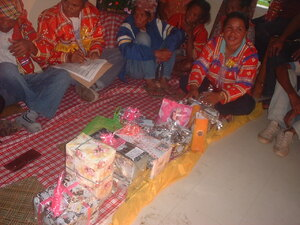

dasag 
/dasag/
v_rt.
“give”
n.
a gift or payment
Amana nahalè ka me anuhang ku, su imbehayan ku sikandan te dasag.
My parent-in-law was very happy because I gave them a gift.
Eng. gift; payment
Online dict status: -
Usage level: M
vt.
for someone (egdasag, indasag, migdasag/pigdasag, agent, eg><ø-) to give a gift or reward (igdasag, instrument, ig-) to someone else (egdasahan, location, eg><an-)
Na prublimaan a ke nekey ka igdasag ku te uyab ku.
It's a problem for me if what kind of gift that I will give to my girlfriend.
Egdasahan ku te salual ka amey ku.
Syn. unag
Eng. give gift; reward
Ceb. ganti
Online dict status: -
Usage level: M
Updated by: RJH,RJH,AAA,AAA,QDL
Last updated: 11/Apr/2019
This page last updated: 03-Jan-2020
Copyright © 2009-2014, Matigsalug Language Christian Association, Inc